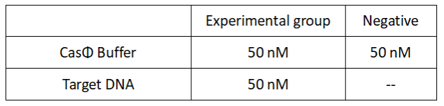
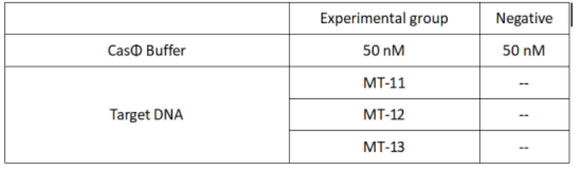

2022.08.10-08.14
Plasmid transfection
Experimental groups:cas Φ(Wild-type)、Mut-1、Mut-2、Mut-3、Mut-4、Mut-5、Mut-6
Operator: Shenwei Shi, Shulin Tan
1.Remove competent cells from -70 ° C and quickly placed on ice to melt.
2.Add DNA which is to be transformed to 100μl of competent cells, lightly mix the tube wall, and left the mixture on ice for 30min.
3.After heating in 42℃ water bath for 90sec, quickly place on ice and stand for 2min. Do not shake the centrifuge tube.
4.Add 900 μl LB or SOC liquid medium (without antibiotics) to the centrifuge tube, mix and resuscitate in a 200rpm shaker for 1h at 37℃.
5.5000rpm(2500*g)，centrifugate for 3min,discard 900 microliters of supernatant. After suspending the bacteria with the remaining medium, evenly coat the bacteria on LB solid medium plate containing corresponding antibiotics.
6.Place the plates in a 37 degree incubator for 10min, and after the bacterial solution was completely absorbed, inverte and culture the plates overnight.
2022.08.15
Express cas Φ(Wild-type)
Operator: Yifan Wu,Yang Bai
1.Preparation of LB culture medium
2.Strains inoculation
- Turn on the ultra-clean table UV lamp for 30 min in advance, and set the shaker speed and temperature at 220r and 37 ℃.
- Open the sterilized culture medium, add 50 μL of kanamycin stock solution (30 mg/mL) to the conical flask, and shake for a thorough mix.
- Take 7 mL of culture medium to the test tube.
- Add about 30 μL of -80 ℃ lyophilized monoclonal strain into the test tube with 7 mL of culture medium.
- Put the test tube inside the shaker and set the parameter at 37 ℃, 220 r for an overnight incubation, which is about 12h.
- Store the culture medium at 4 ℃.
3.Expanded culture
- Remove the test tube from the shaker and place it on the ultra-clean table.
- Take out the test tube containing the bacterial fluid and transfer 1-2 mL of it into a conical flask containing the sterilized culture medium.
- Repeat the procedures with the other test tube and the conical flask.
- Place the two conical flasks in the shaker and set the parameter at 37 ℃, 220 rpm incubation, about 3-4 h,OD=0.6.
- Preserve the strain.
2022.08.16
Express cas Φ(Wild-type)
Operator: Yifan Wu,Yang Bai
1.IPTG induction
- Take out 1 M IPTG (solid powder, filter membrane is used for sterilization after preparation) and melt it at room temperature.
- Take out the conical flasks from the shaker and put them into the ultra-clean table together with IPTG.
- Add 10 μL IPTG under the surface of the culture medium and repeat the procedure.
- Place the conical flasks back into the shaker and incubate at 16 ℃, 220 r for 16 h.
2.Collection
- Centrifuge the bacterial fluid and discard the supernatant.
- Add 5mL of 20mM imidazole respectively and mix well with blowing. Then transfer them to the same tube.
- Add 200ul PMSF.
- Preserve it at -80°C.
3.Protein purification
- Take out the bacteria and melt it at room temperature.
- Place the tube that contains the bacterial fluid in a beaker and bathe it with ice water. Then sonicate the tube until the bacterial fluid is clear.
- Centrifuge the bacterial fluid (12000×g, 30min).
- Equilibrate the Ni column with distilled water and then binding buffer.
- Elute the protein with 20mM, 30mM, 60mM, 150mM, 300mM and 500mM imidazole respectively, and collect it at the end.
2022.08.17
Ultrafiltration
Operator: Jiarui Li, Yang Bai
- Using a 10 KDa ultrafiltration tube, add the collection solution (placed on an ice box) (Max=400 μL) and centrifuge at high speed (4 °C, 12000 × g, 4 min).
- Discard the effluent, add the collection solution to the ultrafiltration tube, and repeat these steps until the entire collection solution is ultrafiltered.
- Add Protein diluent into the ultrafiltration tubes, blow and mix, and ultrafiltrate it. Repeat three times.
- Bradford method for concentration measurement.
- Sub-pack the solution and store at -80°C.
2022.08.18
SDS-PAGE electrophoresis
Operator: Jiarui Li,Yang Bai
8%PAGE Glue Formulation：
SDS-PAGE sample system configuration：
1.Place the gel in the electrophoresis chamber. Pour enough electrophoresis buffer (1 X TBE) to cover the gel to prevent overheating of the gel.Carefully remove the comb.
3.Prepare the protein sample.
4.Add marker into the first well by using a micropipette. Carefully place the prepared samples into adjacent wells.
5.Electrophorese the samples at 30V for 20 minutes and 120V for 1h.
6.Carefully remove the gel, and take a picture for the gel.
2022.08.22
FQ reporter cleavage by Cas-crRNA in the presence of DNA targets
Operator: Jiarui Li, Yang Bai
1.Set up the following 20 μl incubation system:
Dissolved in ddH2O, the mixture was incubated at 37℃ for 30min.
2.Add following reagents to each protein reaction system after incubation to the certain concentration, and the volume of the overall system is 60ul:

Evenly mix the system and add it to 96-hole plates, 20 μ l for each. Fluorescence signals were obtained every 2 minutes at 37°C.
2022.08.26
FQ reporter cleavage by casΦ with hairpin structure crRNA
Experimental groups:CrRNA、H2、H5、H7、H9、H11、H13 RNA
Operator: Jiarui Li, Yang Bai
1.Set up the following 20 μl incubation system:
Dissolved in ddH2O, the mixture was incubated at 37℃ for 30min.
2.Add following reagents to each protein reaction system after incubation to the certain concentration, and the volume of the overall system is 60ul:
Evenly mix the system, add it to 96-hole plates, 20 μl for each hole. Fluorescence signals were obtained every 2 minutes at 37°C.
2022.08.27
FQ reporter cleavage by Cas-crRNA in the presence of DNA targets with single-base mismatch
Operator: Jiarui Li, Yang Bai
1.Set up the following 20μl incubation system:

Dissolved in ddH2O, the mixture was incubated at 37℃ for 30min.
2.Add following reagents to each protein reaction system after incubation to the certain concentration, and the volume of the overall system is 60ul:
Evenly mix the system, add it to 96-hole plates, 20 μ l for each hole. Fluorescence signals were obtained every 2 minutes at 37°C.
2022.08.28
Express protein
Experimental groups: Mut1、Mut2
Operator: Yifan Wu, Yang Bai
1.Strains inoculation
- Turn on the ultra-clean table UV lamp for 30 min in advance, and set the shaker speed and temperature at 220r and 37 ℃.
- Open the sterilized culture medium, add 50 μL of kanamycin stock solution (30 mg/mL) to the conical flask, and shake for a thorough mix.
- Take 7 mL of culture medium to the test tube.
- Add about 30 μL of -80 ℃ lyophilized monoclonal strain into the test tube with 7 mL of culture medium.
- Put the test tube inside the shaker and set the parameter at 37 ℃, 220 r for an overnight incubation, which is about 12h.
- Store the culture medium at 4 ℃.
2.Expanded culture
- Remove the test tube from the shaker and place it on the ultra-clean table.
- Take out the test tube containing the bacterial fluid and transfer 1-2 mL of it into a conical flask containing the sterilized culture medium.
- Repeat the procedures with the other test tube and the conical flask.
- Place the two conical flasks in the shaker and set the parameter at 37 ℃, 220 rpm incubation, about 3-4 h,OD=0.6.
- Preserve the strain.
2022.08.29
Express protein
Experimental groups: Mut1、Mut2
Operator: Yifan Wu, Yang Bai
1.IPTG induction
- Take out 1 M IPTG (solid powder, filter membrane is used for sterilization after preparation) and melt it at room temperature.
- Take out the conical flasks from the shaker and put them into the ultra-clean table together with IPTG.
- Add 10 μL IPTG under the surface of the culture medium and repeat the procedure.
- Place the conical flasks back into the shaker and incubate at 16℃, 220 r for 16 h.
2.Collection
- Centrifuge the bacterial fluid and discard the supernatant.
- Add 5mL of 20mM imidazole respectively and mix well with blowing. Then transfer them to the same tube.
- Add 200ul PMSF.
- Preserve it at -80°C.
3.Protein purification
- Take out the bacteria and melt it at room temperature.
- Place the tube that contains the bacterial fluid in a beaker and bathe it with ice water. Then sonicate the tube until the bacterial fluid is clear.
- Centrifuge the bacterial fluid (12000×g, 30min).
- Equilibrate the Ni column with distilled water and then binding buffer.
- Elute the protein with 20mM, 30mM, 60mM, 150mM, 300mM and 500mM imidazole respectively, and collect it at the end.
4.Ultrafiltration
- Using a 10 KDa ultrafiltration tube, add the collection solution (placed on an ice box) (Max=400 μL) and centrifuge at high speed (4℃, 12000 g, 4 min).
- Discard the effluent, add the collection solution to the ultrafiltration tube, and repeat these steps until the entire collection solution is ultrafiltered.
- Add Protein diluent into the ultrafiltration tubes, blow and mix, and ultrafiltrate it. Repeat three times.
- Bradford method for concentration measurement.
- Sub-pack the solution and store at -80°C.
5.SDS-PAGE electrophoresis.
The protocols were same as 2022.08.18.
2022.08.30-31
Express protein
Experimental groups: Mut3、Mut4
Operator: HongyiHuang, Yang Bai
The protocols were same as 2022.08.28-29
2022.09.01-2022.09.02
Express protein
Experimental groups: Mut5、Mut6
Operator: Keke Zhong, Yang Bai
The protocols were same as 2022.08.28-29
2022.09.03
FQ reporter cleavage by Cas-crRNA in the presence of DNA targets with single-base mismatch
Operator: Keke Zhong, Yang Bai
1.Set up the following 20μl incubation system:
Dissolved in ddH2O, the mixture was incubated at 37℃ for 30min.
2.Add following reagents to each protein reaction system after incubation to the certain concentration, and the volume of the overall system is 60ul:

Evenly mix the system, add it to 96-hole plates, 20 μl for each hole. Fluorescence signals were obtained every 2 minutes at 37°C.
2022.09.04
FQ reporter cleavage by Cas-crRNA in the presence of DNA targets with single-base mismatch
Operator: Shenwei Shi, Yang Bai
1.Set up the following 20μl incubation system:

Dissolved in ddH2O, the mixture was incubated at 37℃ for 30min.
2.Add following reagents to each protein reaction system after incubation to the certain concentration, and the volume of the overall system is 60ul:
Evenly mix the system, add it to 96-hole plates, 20 μl for each hole. Fluorescence signals were obtained every 2 minutes at 37°C.
2022.09.05
Measure protein concentration by Bradford assay
Operator:Hongyi Huang,Shenwei Shi
1.Take 7 test tubes and operate in parallel according to the table below.
Plot standard curves on graph paper using A595 nm as the ordinate and standard protein content as the abscisordinate.
2.Determination of protein concentration in unknown samples
The determination method is the same as above, and an appropriate unknown sample volume is taken to make the determination value within the straight line range of the standard curve. Based on the measured A595 nm value, the amount equivalent to the standard protein can find on the standard curve, so as to calculate the protein concentration (mg/mL) of the unknown sample.
3.Protein concentration：
2022.09.06
PAGE electrophoresis for cleavage ssDNA target with different Cas-crRNA
Operator:Yidong Zhang
1.Configure PAGE.
PAGE Glue Formulation
2. Configuration 50 μL Reaction system.
Reaction at 37 ℃ for 30min, centrifugation at 12000 rpm for 5min, and take the supernatant.
3. PAGE sample system configuration
2022.09.07
Protein activity verification
FQ reporter cleavage by different Cas-crRNA in the presence of DNA targets
Experimental groups:CasΦ Wild-type、Mut-1、Mut-2、Mut3、Mut4、Mut-5、Mut-6
Operator:Hongyi Huang, ShenWei Shi
1.Set up the following 20μl incubation system:

Dissolved in ddH2O, the mixture was incubated at 37℃ for 30min.
2.Add following reagents to each protein reaction system after incubation to the certain concentration, and the volume of the overall system is 60ul:
Evenly mix the system and add it to 96-hole plates, 20 μl for each hole. Fluorescence signals were obtained every 2 minutes at 37°C.
2022.09.08
FQ reporter cleavage by casΦ with hairpin structure crRNA
Experimental groups:CrRNA、H2、H5、H7、H9、H11、H13 RNA
Operator: Shenwei Shi, Hongyi Huang
The protocols were same as 2022.08.26.
2022.09.10
FQ reporter cleavage by different Cas-crRNA in the presence of DNA targets with single-base mismatch
Operator: Keke Zhong,Hongyi Huang
1.Set up the following 20μl incubation system:
Dissolved in ddH2O, the mixture was incubated at 37℃ for 30min.
2.Add following reagents to each protein reaction system after incubation to the certain concentration, and the volume of the overall system is 60ul:

Evenly mix the system, add it to 96-hole plates, 20μl for each hole. Fluorescence signals were obtained every 2 minutes at 37℃.
2022.09.12
FQ reporter cleavage by Mut-1 with hairpin structure crRNA
Operator: Keke Zhong, Shenwei Shi
1.Set up the following 20μl incubation system:
2.Add following reagents to each protein reaction system after incubation to the certain concentration, and the volume of the overall system is 60ul:
Evenly mix the system, add it to 96-hole plates, 20μl for each hole. Fluorescence signals were obtained every 2 minutes at 37℃.
2022.09.13
FQ reporter cleavage by Mut-1 with hairpin structure crRNA
Operator:Hongyi Huang, Keke Zhong
1.Set up the following 20μl incubation system:
2.Add following reagents to each protein reaction system after incubation to the certain concentration, and the volume of the overall system is 60ul:
Evenly mix the system, add it to 96-hole plates, 20μl for each hole. Fluorescence signals were obtained every 2 minutes at 37℃.
2022.09.15
FQ reporter cleavage by different Cas-crRNA in the presence of DNA targets with single-base mismatch
Operator:Hongyi Huang, Shenwei Shi, Keke Zhong
1.Set up the following 20μl incubation system:
2.Add following reagents to each protein reaction system after incubation to the certain concentration, and the volume of the overall system is 60ul:
Evenly mix the system, add it to 96-hole plates, 20μl for each hole. Fluorescence signals were obtained every 2 minutes at 37℃.
2022.09.24
FQ reporter cleavage by different Cas-crRNA in the presence of DNA targets with single-base mismatch
Operator:Hongyi Huang, Shenwei Shi
1.Set up the following 20μl incubation system:
2.Add following reagents to each protein reaction system after incubation to the certain concentration, and the volume of the overall system is 60ul:
Evenly mix the system, add it to 96-hole plates, 20μl for each hole. Fluorescence signals were obtained every 2 minutes at 37℃.
2022.09.25
FQ reporter cleavage by different Cas-crRNA in the presence of DNA targets with single-base mismatch
Operator:Hongyi Huang, Shenwei Shi
1.Set up the following 20μl incubation system:
2.Add following reagents to each protein reaction system after incubation to the certain concentration, and the volume of the overall system is 60ul:
Evenly mix the system, add it to 96-hole plates, 20μl for each hole. Fluorescence signals were obtained every 2 minutes at 37℃.
2022.09.26
FQ reporter cleavage with samples containing 50% to 0% DNA mutations.
Operator:Hongyi Huang, Shenwei Shi,Keke Zhong,Yang Bai
1.Set up the following 20 μl incubation system. The normal crRNA is added to WT, while the H4 is added to Mut-4.
Dissolved in ddH2O, the mixture was incubated at 37℃ for 30min.
Add following reagents to each protein reaction system after incubation to the certain concentration, and the volume of the overall system is 60ul:
Evenly mix the system, add it to 96-hole plates, 20 μl for each hole. Fluorescence signals were obtained every 2 minutes at 37°C.